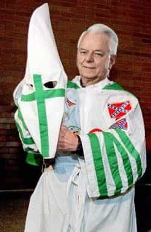
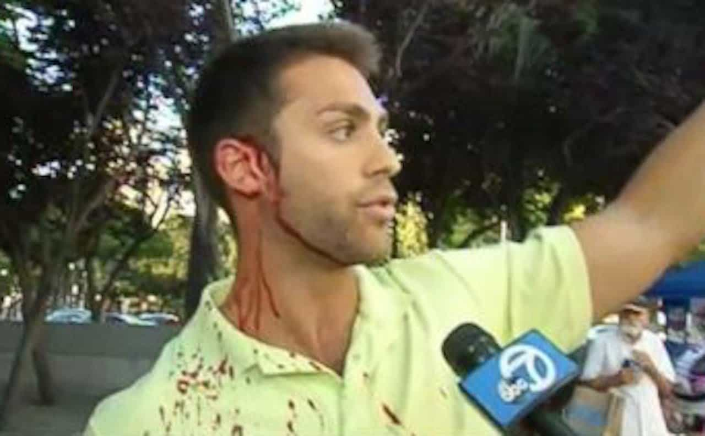

< < < Back
Hillary’s Alt Right Speech Bombed – Return Of Kings
Hillary Clinton’s long-awaited alt right speech in Reno was a failure. Although she peddled the same ad hominem insults and falsehoods expected by Return Of Kings, her focus on a supposedly fringe rightwing conspiracy centered on the alt right was glaring in its holes. After connecting herself with renowned influence expert, Robert Cialdini, we had anticipated that her lies would have been a lot more believable, internally consistent, and less tenuous-sounding.
After a significant two-hour delay, Hillary finally made her way to the lectern at a local community college. From higher rates of schoolyard bullying to Brexit leader Nigel Farage appearing on “Russian propaganda” outlets, Clinton endeavored to link Donald Trump to so many nefarious happenings in America and the world that one would need a team of full-time accountants to keep track of them.
Clinton copied the Wall Street Journal‘s inherently vague definition of the alt right in her speech:
… a loose but organized movement, mostly online, that “rejects mainstream conservatism, promotes nationalism and views immigration and multiculturalism as threats to white identity.”
She then took immense artistic liberty in throwing the alt right alongside basically any policy or group she did not like.
Ridiculously, Vladimir Putin has been blamed for Trump-style nationalism and the alt right
For someone who claims to oppose Trump’s “hysteria,” Hillary Clinton does a good job of generating her own. Particularly after Trump made a joke about Russian hackers going after the DNC, Hillary Clinton has gleefully sought to reduce The Donald to the status of Vladimir Putin’s stooge. The Reno speech went one step further, alleging that Putin is one of the primary impetuses for the ideology of Donald Trump and the alt right.
Lacking any evidence to make these kinds of assertions, Clinton claimed that Nigel Farage, who had appeared with Trump at one of his rallies in the Deep South this week, was appearing in “Russian propaganda” pieces. A clear reference to Farage’s appearances on RT, formerly known as Russia Today, Hillary’s scathing assessment of the Brexit leader ignores how Bernie Sanders and countless other Democrats have appeared on that same network. Fittingly, neither Sanders nor his time speaking with this “propaganda” mouthpiece was mentioned in the Reno speech.
No discussion by “racism-hating” Hillary of her love for ex-KKK leader Senator Robert Byrd

Robert Byrd, late Senator and serious KKK leader and recruiter, also a great friend of Hillary’s.
We are meant to believe that the alt right is a hotbed of racism, all while ignoring Hillary Clinton’s own chequered racial past. Clinton has been obsessed with linking Donald Trump to ex-Ku Klux Klan Grand Wizard David Duke, who endorsed the Republican Presidential nominee. Her speech in Reno continued this pathetic theme. Tellingly, Trump has had no working relationship with Duke, unlike Hillary Clinon’s fawning admiration for the late West Virginia Senator and senior KKK leader Robert Byrd. Clinton described Byrd as a “mentor” and was inconsolable when the long-serving legislator, responsible for recruiting well over a hundred people, if not more to the KKK, died.
Roosh gives his analysis of Hillary’s alt right speech
Hillary claims Trump will deport “millions of immigrants,” without mentioning that they’re illegals
It is now racist to ask that US border laws, flouted for decades, are finally enforced. Donald Trump and the alt right are racist according to Hillary because they want to deport so-called immigrants, without her bothering to mention that those targeted by any Trump Administration would be illegal arrivals.
Trump is “increasing” schoolyard bullying, even as anti-Trump supporters practice real-world violence
Hillary was lightning quick in describing how American youngsters are apparently amping up their bullying at school, most notably against children of “color,” all because of Trump and the alt right! Another massive stretch she indulged in was referencing a group of high school students in Indiana, who had allegedly used Trump banners and shouted “Build the wall!” during a sporting game, and tying it directly to Trump’s “racism.”
Meanwhile, here are some examples of the real violence that has followed Trump supporters in recent times:

Why wasn’t the alt right branded a criminal conspiracy?
The failure of Hillary to come out all guns blazing was a surprise. It seems likely that she is going to try to deal with Trump first and then directly go after the alt right once in office.
One thing’s for sure, though: Trump has no reason whatsoever to feel threatened by Hillary’s half-hearted attack on him and the alt right today.
 If you like this article and are concerned about the future of the Western world, check out Roosh's book Free Speech Isn't Free. It gives an inside look to how the globalist establishment is attempting to marginalize masculine men with a leftist agenda that promotes censorship, feminism, and sterility. It also shares key knowledge and tools that you can use to defend yourself against social justice attacks. Click here to learn more about the book. Your support will help maintain our operation.
If you like this article and are concerned about the future of the Western world, check out Roosh's book Free Speech Isn't Free. It gives an inside look to how the globalist establishment is attempting to marginalize masculine men with a leftist agenda that promotes censorship, feminism, and sterility. It also shares key knowledge and tools that you can use to defend yourself against social justice attacks. Click here to learn more about the book. Your support will help maintain our operation.
Read More: Hillary Is Planning To Attack The Entire Alt Right At 1PM EST—Here’s What To Expect